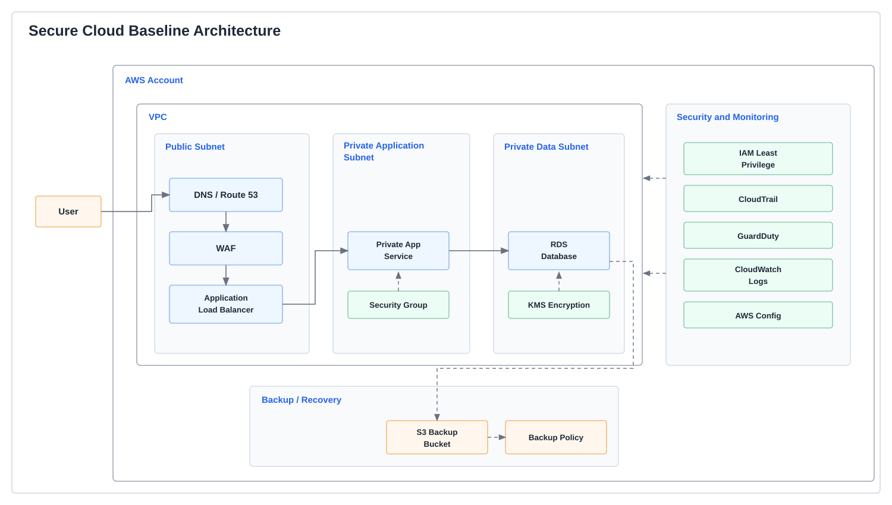
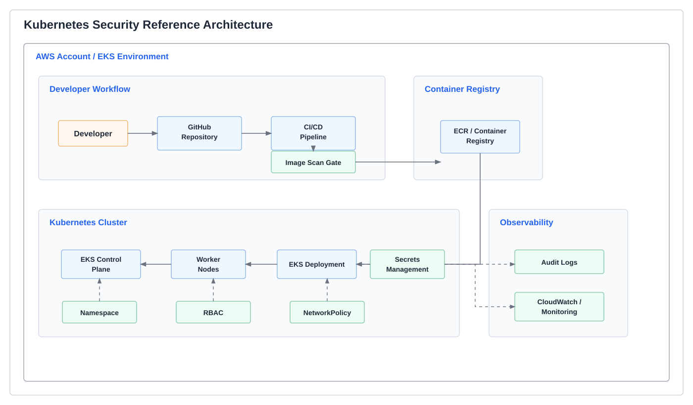
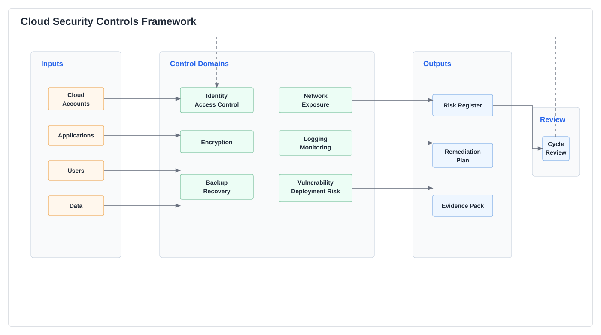
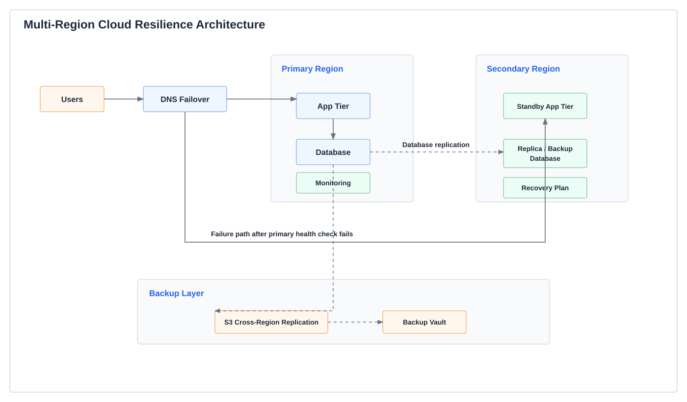
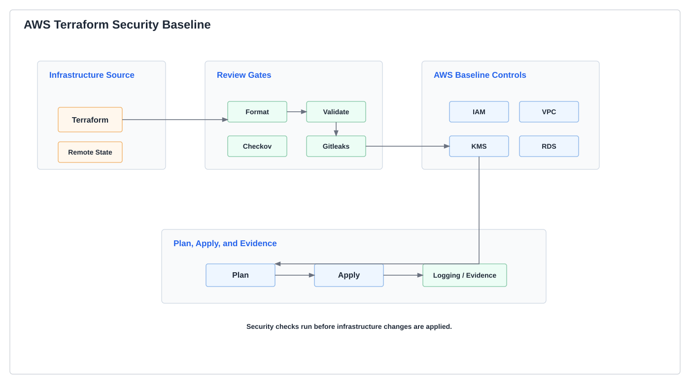
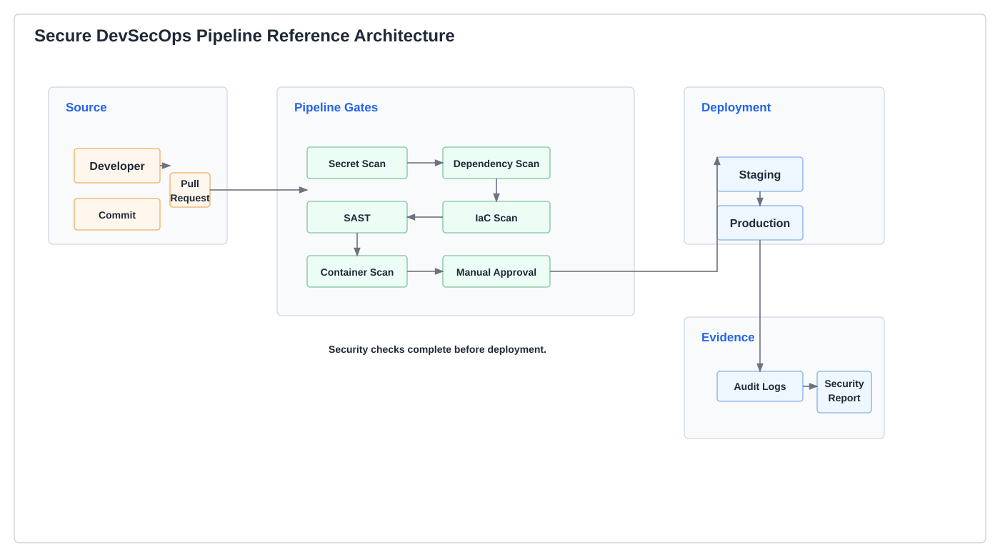

Cloud Security & DevSecOps Engineer
Peter Christian Agbenyega
Cloud Security & DevSecOps Engineer
AWS Solutions Architect - Professional
AWS Security Specialty SCS-C02
AWS Solutions Architect Associate
Designing secure, scalable cloud infrastructure that reduces American exposure to cloud misconfiguration and weak deployment controls across business, community, and software supply chain environments.
The National Security Challenge
Cloud Misconfiguration Remains One of the Most Preventable Cyber Risks
IBM's Cost of a Data Breach Report 2024 found that the global average breach cost reached $4.88 million, up from $4.45 million the year before, while 82% of studied breaches involved data stored in cloud environments. CISA separately warns that unprotected and misconfigured cloud services are common targets for threat actors because poor configurations can enable sensitive data theft and even cryptojacking.
$4.88M
Average global breach cost in IBM's July 30, 2024 report
82%
Of studied breaches involved cloud-stored data
99.9%
Of U.S. businesses are small businesses per SBA Office of Advocacy
The Infrastructure Security Response
Open Reference Architectures for Safer Cloud Adoption
Peter Agbenyega designs and publishes reusable cloud security reference work built around AWS, Terraform, and DevSecOps controls. The emphasis is practical: network segmentation, identity boundaries, policy enforcement, secure CI/CD, and deployment patterns that reduce the chance of avoidable configuration failures from the start.
His public repositories show both infrastructure breadth and maturity honesty. Mature work is presented as mature. Early-stage work is presented as a foundation. That distinction matters in technical review and in legal review.
View Public Reference ArchitecturesPortfolio Mission
Public Interest and Technical Evidence
This portfolio documents independent public-interest technical work focused on secure cloud architecture, DevSecOps automation, Kubernetes hardening, multi-region resilience, and secure AI infrastructure. The goal is to make cloud-security patterns easier to study, review, and adapt by technical teams working to reduce misconfiguration risk and strengthen digital resilience.
This portfolio uses AWS as the primary implementation and documentation environment, with Azure and Google Cloud concepts mapped where appropriate. The purpose is to document secure cloud architecture patterns, security controls, resilience planning, and DevSecOps automation as public-interest technical reference work.
Reference Architecture Portfolio
Secure Infrastructure Patterns for American Organizations
Each project below documents a specific security or resilience pattern: hardened landing zones, controlled networking, secure CI/CD, Kubernetes foundations, or continuity-oriented infrastructure design.

Secure Cloud Baseline Architecture
Repository: ResilientOps-Cloud-Architecture
Draw.io-style reference diagram for public technical documentation.
Terraform-based AWS baseline showing segmented networking, controlled ingress, private application placement, data-tier separation, and centralized logging.
Terraform
AWS VPC
Auto Scaling
View Architecture

Kubernetes Security Reference Architecture
Draw.io-style reference diagram for public technical documentation.
Problem statement. Kubernetes platforms introduce avoidable risk when cluster access, workload boundaries, and image controls are not defined from the start.
Technical contribution. This reference architecture maps a secure delivery path from source control and image scanning into the control plane, private worker nodes, secrets handling, RBAC, and NetworkPolicy-based isolation.
Public benefit. It provides a reusable baseline that smaller teams can study before operating containerized workloads in cloud environments.
EKS
Kubernetes
RBAC
View Architecture

Cloud Security Controls Framework
Draw.io-style reference diagram for public technical documentation.
Problem statement. Cloud security programs often struggle to show how identity, network, encryption, detection, and compliance controls connect as a single reviewable framework.
Technical contribution. This reference architecture organizes least-privilege identity design, network controls, KMS-backed encryption, logging, threat findings, and control mapping into one structured control flow.
Public benefit. It helps reviewers and practitioners trace how practical cloud safeguards support accountable and repeatable governance.
AWS
Terraform
CloudTrail
View Architecture

Multi-Region Cloud Resilience Architecture
Draw.io-style reference diagram for public technical documentation.
Problem statement. Critical workloads cannot rely on a single region when continuity planning, replication, and recovery procedures are expected.
Technical contribution. This reference architecture shows DNS routing, primary and secondary region placement, replication flows, backups, health monitoring, and failover runbook alignment.
Public benefit. It documents continuity patterns that support more resilient digital operations for organizations with limited infrastructure depth.
Route 53
Multi-AZ
DR
View Architecture

AWS Terraform Security Baseline for SMB Environments
Repository: AWS-Terraform-Secure-Infrastructure
Draw.io-style reference diagram for public technical documentation.
Security-focused AWS baseline for small and medium business environments with mapped controls across IAM, encryption, Terraform state protection, and automated review gates.
Terraform
IAM
KMS
View Architecture

Secure DevSecOps Pipeline Reference Architecture
Draw.io-style reference diagram for public technical documentation.
Problem statement. Software delivery pipelines need review gates that catch secrets exposure, insecure infrastructure changes, and vulnerable build artifacts before release.
Technical contribution. This reference architecture documents a secure delivery sequence across source review, secret scanning, SAST and IaC checks, build and test, container scanning, approval, deployment, and monitoring feedback.
Public benefit. It demonstrates a practical control path that can be reused when organizations want stronger release discipline without unnecessary platform complexity.
GitHub Actions
Trivy
OWASP ZAP
View Architecture
Security-First Engineering Practice
The DevSecOps Security Pipeline
The diagram below groups Peter's public workflow into eight core gates for readability. The underlying GitHub Actions implementation in the flagship DevSecOps pipeline reference architecture currently spans 15 total stages from validation through approved deployment.
Prevents
- Hardcoded credentials and token leakage
- Terraform and container misconfigurations
- Unreviewed image promotion into deployment paths
Detects
- High and critical package vulnerabilities
- Static code weaknesses and insecure patterns
- Runtime exposure such as missing headers and weak defaults
Complies With
- NIST SP 800-53 control-oriented workflows
- CIS benchmark-style hardening expectations
- AWS Well-Architected security practices
AWS Certifications
Credentials Built Around Enterprise Cloud Security
AWS Certified Solutions Architect - Professional
Credential: SAP-C02
Advanced multi-account enterprise architecture design
AWS Certified Security - Specialty
Credential: SCS-C02
Most relevant to this portfolio: IAM, KMS, GuardDuty, CloudTrail, logging,
encryption, and VPC security
AWS Certified Solutions Architect - Associate
Credential: SAA-C03
Foundation architecture and AWS service design
Technical Expertise
Security Controls, Infrastructure Delivery, and Platform Foundations
Cloud Infrastructure
Security Tooling
Containers and Orchestration
MS Cloud Computing Systems
University of Maryland Global Campus
Strengthening theoretical foundations alongside public reference work and applied implementation experience
Credentials and Education
Professional Development
Graduate study and certifications strengthen the theoretical and practical foundation behind the portfolio's cloud-security reference work.
AWS Certified Security — Specialty
Credential: SCS-C02AWS Certified Solutions Architect — Professional
Credential: SAP-C02AWS Certified Solutions Architect — Associate
Credential: SAA-C03Master of Science in Cloud Computing Systems
University of Maryland Global CampusGraduate Certificate in Cybersecurity Technology
University of Maryland Global CampusDiploma in Basic Education
University of Cape CoastBachelor of Education in Mathematics
University of Education, WinnebaApplied Technical Initiatives
Selected Implementations and Operating Context
Cloud Nexus Hub
Cloud Nexus Hub LLC is the operating entity through which Peter documents architecture work, organizes technical implementations, and maintains a U.S. base for cloud-security-focused initiatives.
cloudnexus360.comCloud Nexus Pilot
Interview preparation platform for cloud and DevSecOps practitioners, including AWS security subject matter grounded in IAM, KMS, GuardDuty, and operational cloud defense.
cloudnexuspilot.comUBAG Store
E-commerce platform for Uncle Bakarr African Grocery in Utica, New York, extending digital access to a minority-owned local business serving the surrounding Utica community through online commerce infrastructure.
ubagstore.comWOMIEX
Bilingual trade platform supporting cross-border visibility between DRC mineral producers and U.S. industrial buyers, with a focus on supply-chain transparency and commercial trust.
womiex.comWhy This Work Matters
Technical Depth, Real-World Need, and Continued Growth
Demonstrated Technical Depth
- Three AWS certifications including Professional and Security Specialty levels
- Open cloud security architecture repositories available to public reviewers
- Graduate study in Cloud Computing Systems at a U.S. university
- Production-oriented Terraform and DevSecOps implementation evidence
- Applied implementation work focused on secure deployment and operational resilience
Why Cloud Security Matters
- CISA identifies misconfigured cloud services as common targets for threat actors
- IBM documents persistent cloud-linked breach exposure and escalating breach costs
- SBA documents that 99.9% of U.S. businesses are small businesses with limited security resources
- Reference architectures map directly to access control, logging, segmentation, and secure delivery concerns
- Applied technical initiatives extend secure digital capability to local businesses and supply-chain platforms
Continued Growth and Direction
- Public repositories show hands-on work, not only theoretical familiarity
- Public and live technical implementations show practical operating experience
- Combination of cloud security, DevSecOps, full-stack delivery, and systems thinking
- U.S.-based operating context through work in Utica, New York and Cloud Nexus Hub LLC
- Ongoing graduate education deepens technical breadth while public work continues
Public Contributions
Open-Source Security Reference Work
Public code matters because it allows technical reviewers, lawyers, and adjudicators to examine the work directly rather than relying on unsupported summaries.
Latest Technical Writing
Cloud Security for Everyday America
Why Small Organizations Need Secure-by-Design Cloud Architecture Before They Scale explains why security is easier to build into cloud architecture early than to retrofit after growth — with core principles, an AWS-style example, and a starter checklist.
Read ArticleSecure Cloud Baseline Architecture
ResilientOps-Cloud-Architecture
Production-style AWS baseline with modular Terraform, controlled ingress, private application tiers, and segmented networking.
View on GitHubKubernetes Security Reference Architecture
Secure modular AWS EKS foundation with Terraform modules for VPC, IAM, control plane setup, and example security manifests.
View on GitHubCloud Security Controls Framework
Terraform-based security landing zone with multi-AZ networking, IAM controls, EC2 separation, and private-subnet RDS design.
View on GitHubAWS Terraform Security Baseline for SMB Environments
AWS-Terraform-Secure-Infrastructure
Compliance-mapped AWS landing zone implementing NIST, CIS, Well-Architected, and security scanning baselines for SMB environments.
View on GitHubSecure DevSecOps Pipeline Reference Architecture
Security-focused DevSecOps workflow with linting, testing, scanning, audit evidence, approval gates, and controlled deployment flow.
View on GitHubMulti-Region Cloud Resilience Architecture
Continuity-focused public repository reserved for multi-zone and failover-oriented cloud architecture work.
View on GitHubAll reference architectures are published publicly so that organizations, reviewers, and collaborators can inspect the technical work directly.
Flagship Reference Work
Evidence Portfolio
The five projects below form a coherent program of public-interest technical reference work, covering identity and access controls, network segmentation, secure delivery, container security, and regional resilience.
Cloud Security Controls Framework
A structured reference for identity, network segmentation, encryption, logging, monitoring, detection, response, compliance mapping, and remediation planning.
View RepositoryKubernetes Security Reference Architecture
A Kubernetes/EKS-style security reference focused on RBAC, namespace isolation, secrets handling, network policies, image security, and audit visibility.
View RepositoryMulti-Region Cloud Resilience Architecture
A resilience reference covering regional continuity, DNS routing, replication, backup strategy, health checks, alerting, and failover planning.
View RepositorySecure DevSecOps Pipeline Reference Architecture
A secure software delivery reference covering secret scanning, dependency review, SAST, IaC scanning, container scanning, approval gates, rollback readiness, and audit evidence.
View RepositorySecure Cloud Baseline Architecture
A secure baseline reference for segmented cloud networking, controlled ingress, private workloads, IAM boundaries, encryption, logging, and monitoring.
View Repository
Peter Christian Agbenyega
Cloud Security & DevSecOps Engineer
Utica, New York
AWS Security & Architecture
Terraform and Kubernetes Foundations
DevSecOps Pipeline Controls
About
About Peter
I'm a cloud security and DevSecOps engineer based in Utica, New York. I came into this field the way most serious practitioners do: by building things, breaking them, figuring out why, and building them better. Over the past several years I've worked across AWS architecture, infrastructure automation, CI/CD security, and Kubernetes, earning three AWS certifications including the Security Specialty along the way. I'm currently deepening that foundation through graduate study in cloud computing systems and cybersecurity technology at the University of Maryland Global Campus.
Most of my public work is focused on a problem I keep running into: smaller organizations such as nonprofits, healthcare-adjacent services, small businesses, and schools are running real workloads on cloud infrastructure, but they do not always have dedicated security teams to catch misconfigurations before they become incidents. I build open-source reference architectures, implementation guides, and practical checklists specifically for that gap. The goal is to make secure-by-design cloud architecture understandable and reusable, not just available to organizations with large security budgets.
Outside of cloud work, I've spent time in human-services environments supporting vulnerable individuals in a regulated setting. That experience, including documentation discipline, confidentiality, operational reliability, and the weight of systems that affect real people, shows up in how I think about infrastructure. Secure systems are not just a technical problem. They protect people, data, and the organizations that serve them.
Utica, New York.
Organizational Foundation
Cloud Nexus Hub LLC
Cloud Nexus Hub LLC provides an organizational foundation for Peter's independent technical documentation, cloud-security reference architecture work, and long-term professional development in secure infrastructure, DevSecOps automation, and responsible cloud adoption.
The public materials connected to Cloud Nexus Hub are independent technical references and do not contain client secrets, proprietary systems, protected personal information, or compliance certification claims.
cloudnexus360.comProfessional and Community Context
Community and Professional Responsibility
Alongside cloud security and DevSecOps work, Peter has professional experience in human-services environments supporting vulnerable individuals, documentation discipline, safety protocols, and operational responsibility. This background reinforces a practical understanding of regulated environments, reliability, confidentiality, and the importance of systems that protect people, data, and critical services.
Connect With Peter
Architecture Review and Professional Inquiry
For technical diligence, secure cloud architecture discussion, cloud security collaboration, or professional inquiry related to the public portfolio and reference work.